10 部片单 · 恐怖 / 科幻 / 惊悚 / 悬疑 / 剧情
| # | 片名 | 类型 | 评分 / 状态 |
|---|---|---|---|
| 01 | 黑客帝国 | 科幻 / 动作 / 惊悚 | 9.1 / 88% / 8.7 |
| 02 | 第九区 | 科幻 / 惊悚 / 社会寓言 | 8.3 / 90% / 81 |
| 03 | 闪灵 | 恐怖 / 心理惊悚 | 8.3 / 84% / 66 |
| 04 | 生人勿进 | 恐怖 / 剧情 / 青春 | 7.8 / 98% / 82 |
| 05 | 沉默的羔羊 | 惊悚 / 悬疑 / 犯罪 | 8.9 / 95% / 86 |
| 06 | 老无所依 | 惊悚 / 犯罪 / 剧情 | 8.4 / 93% / 92 |
| 07 | 穆赫兰道 | 悬疑 / 心理 / 剧情 | 8.4 / 85% / 85 |
| 08 | 致命魔术 | 悬疑 / 科幻 / 剧情 | 8.9 / 76%（观众 92%） / 8.5 |
| 09 | 小姐 | 悬疑 / 剧情 / 惊悚 | 8.3 / 96% / 8.1 |
| 10 | 燃烧 | 剧情 / 悬疑 / 惊悚 | 7.9 / 95% / 90 |
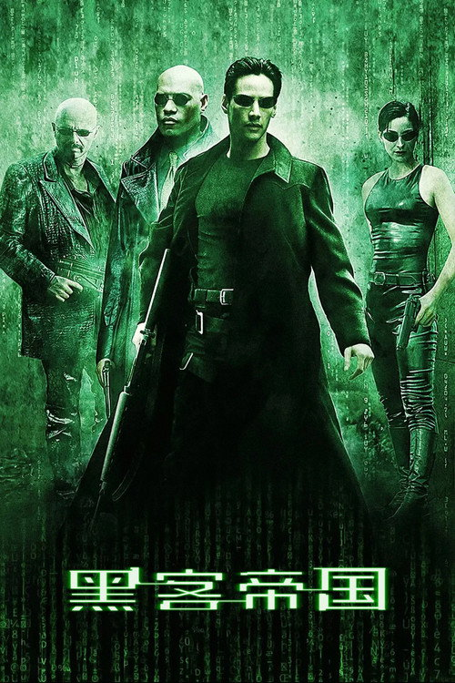
黑客帝国 The Matrix
红色药丸还是蓝色药丸——这个问题你早晚要回答一次。
剧情梗概
程序员托马斯·安德森白天是普通白领，夜里是代号「尼奥」的黑客。他总觉得这个世界哪里不对，直到崔妮蒂找上他，把他带到墨菲斯面前。墨菲斯告诉他：你以为的现实，是一套叫「矩阵」的模拟程序；真正的世界在 2199 年，人类被机器奴役，身体泡在营养液里，意识被关在幻象中。墨菲斯相信尼奥就是预言中的「救世主」。尼奥吞下红色药丸，醒了过来——而醒来之后的第一件事，是发现自己连站都站不稳。
亮点
- 沃卓斯基姐妹自编自导，这是她们的第二部长片；在此之前只有一部《惊世狂花》(1996)，几乎没人看过。
- 「子弹时间」由 120 台相机环形排列实拍完成，是 90 年代最具标志性的视觉发明，此后被无数作品反复致敬。
- 袁和平担任动作指导，把香港功夫片的美学整建制搬进好莱坞科幻片——「我会功夫了」那句台词就是这次融合最直白的注脚。
- 拿下第 72 届奥斯卡最佳剪辑、最佳视觉效果、最佳音效剪辑、最佳音响四项大奖，是当年技术奖项的最大赢家。
- 片头那套绿色代码雨的视觉设计，灵感来自设计师妻子的日文假名食谱字符。
- 成本约 6300 万美元，全球票房约 4.67 亿美元；内地 2000 年 1 月引进，豆瓣 9.1、88 万余人评分，长期位居 TOP250。
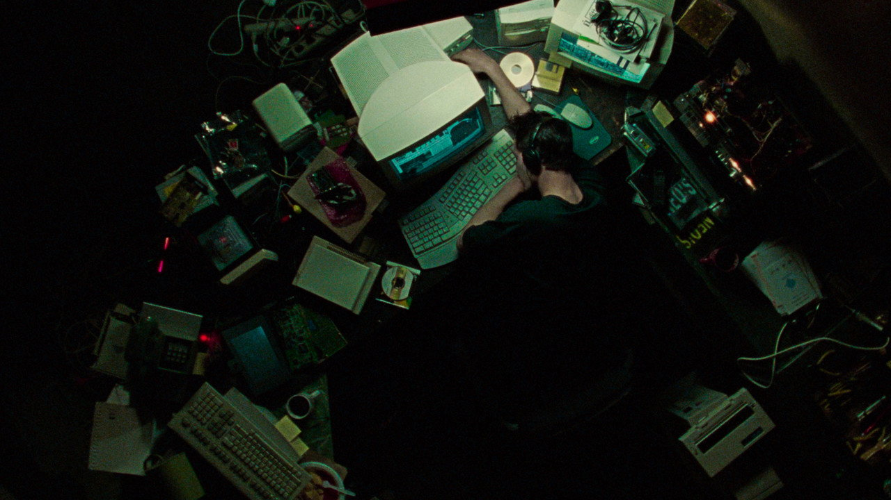
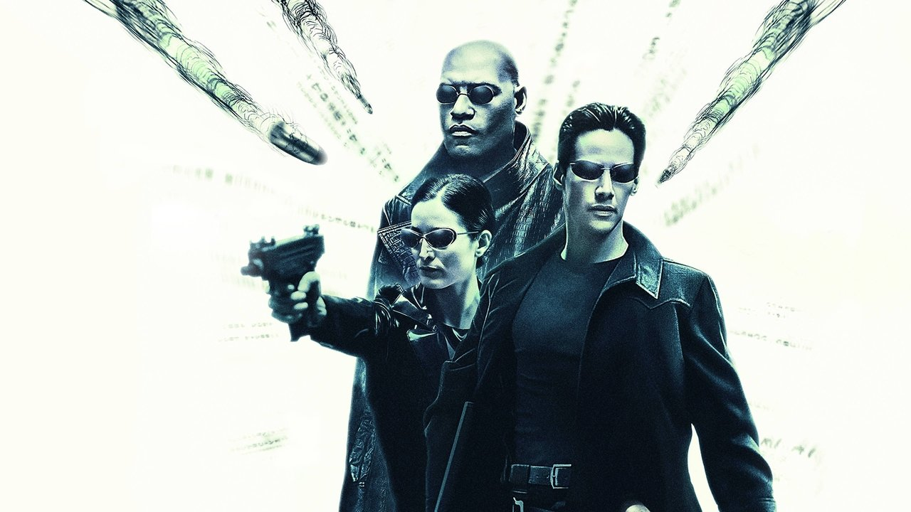
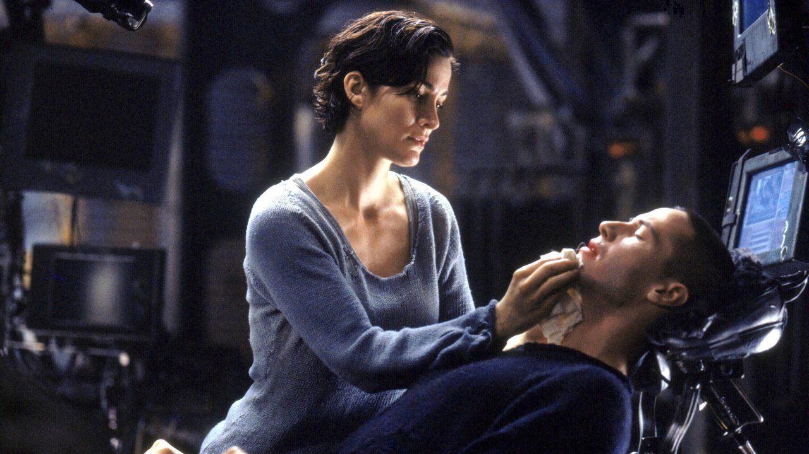
导演与主创 · 他们的历史作品
 黑客帝国2：重装上阵
黑客帝国2：重装上阵 黑客帝国3：矩阵革命
黑客帝国3：矩阵革命 云图
云图
 疾速追杀
疾速追杀 疾速追杀2黑客帝国2：重装上阵
疾速追杀2黑客帝国2：重装上阵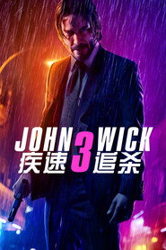
疾速追杀3黑客帝国2：重装上阵黑客帝国3：矩阵革命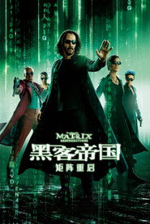
黑客帝国4：矩阵重启短评（轻微剧透）
《黑客帝国》最厉害的地方不是特效，是它把一个哲学问题拍成了选择题。柏拉图的洞穴、笛卡尔的恶魔、普特南的缸中之脑——这些在课本里能睡着的命题，被包进一件黑皮风衣和一句「跟着白兔走」里，直接打进了流行文化。沃卓斯基姐妹真正做对的一件事是：她们没有把尼奥写成天选之子后就撒手不管，而是让他一遍遍失败——跳楼失败、被特工抓住失败、救墨菲斯差点失败。他「觉醒」的过程不是拿到超能力，是接受一个很不好受的前提。影片的第二个聪明之处是它从不解释矩阵是怎么来的、机器为什么要这么做，所有设定都只给到够用的程度，剩下的留给观众吵了二十多年。缺点也说清楚：后三分之一基本退化成枪战片，几段打斗偏长；第二部第三部的哲学铺陈回头看是有点收不住。轻微剧透：整部片真正的转折点不是尼奥会飞，是那句「勺子并不存在」——你不需要改变世界，你需要先承认自己判断世界的方式是错的。
为什么值得一看
还没看过的人：这是那种「不看没法跟人聊电影」的基础款，而且 25 年过去它的视觉语言一点没过时。喜欢《攻壳机动队》《银翼杀手》《盗梦空间》这类在「什么是真实」上做文章的观众。动作场面强度不低但几乎不靠血浆，PG-13 到 R 之间（本片为 R 级），适合想看思辨型科幻、又不想全程坐着读字幕的人。内地 2000 年曾公映。
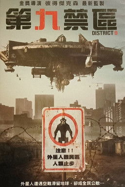
第九区 District 9
外星人来了，落在约翰内斯堡。然后我们给他们建了个贫民窟。
剧情梗概
1982 年，一艘巨型外星飞船停在约翰内斯堡上空，一动不动。人类撬开船体，里面是约一百万名营养不良的外星难民，被安置在地面上叫「第九区」的隔离营。二十多年后，政府决定把这群被叫作「大虾」的外星人迁往更远的新营区，负责执行的是性格温和、循规蹈矩的官僚威库斯。一次强制搬迁中，他意外接触到一管外星流体，身体开始发生变化——而他也因此成了各路人马眼中最值钱的东西。
亮点
- 尼尔·布洛姆坎普的长片处女作；他此前是广告与短片导演，本片由彼得·杰克逊监制，几乎是「一部短片直接放大」的产物。
- 沙尔托·科普雷饰威库斯，一位此前几乎没有表演经验的南非人；他从一个可笑的小官僚到崩溃的全过程，是全片最有力的部分。
- 影片前半段用伪纪录片与新闻素材开场，把外星难民议题直接嫁接到南非的种族隔离与强制搬迁历史之上——这不是隐喻，是明写。
- 成本约 3000 万美元，全球票房约 2.11 亿美元，并获第 82 届奥斯卡最佳影片、最佳改编剧本、最佳剪辑、最佳视觉效果四项提名。
- 全片在南非实地拍摄，外星人与飞船由维塔工作室制作；前半段的纪实质感与后半段的动作场面是刻意做出的割裂。
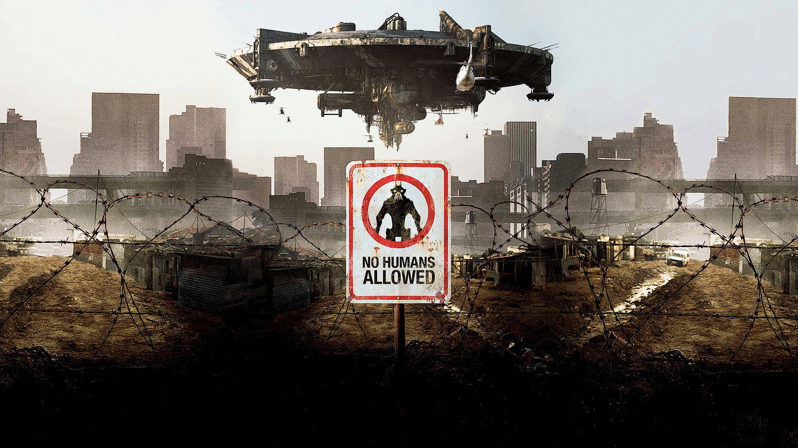
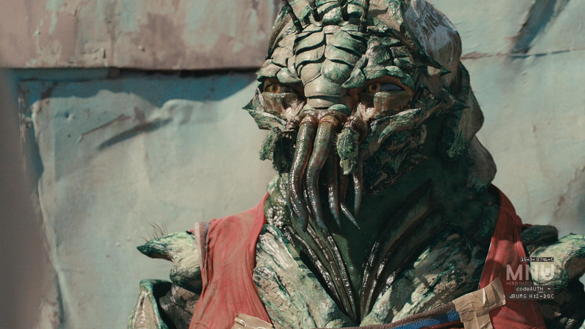
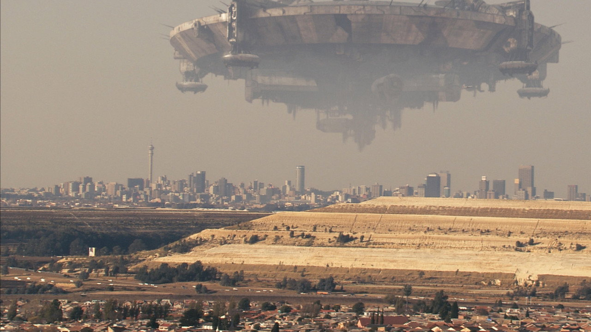
导演与主创 · 他们的历史作品
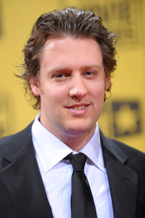
 极乐空间
极乐空间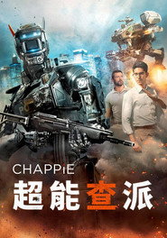
超能查派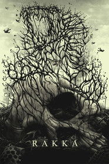
拉卡 沉睡魔咒极乐空间
沉睡魔咒极乐空间短评（轻微剧透）
《第九区》是一部「用 B 级片外壳拍 A 级议题」的电影，而它最好的一点是：它真的让自己变得难看了。布洛姆坎普没有把威库斯写成一个英雄，他写的是一个只会照章办事、会拿外星人卵当垃圾点掉、还会跟同事开玩笑的普通人。所以当他自己的身体开始变异时，你不会觉得「报应」，你会觉得「这就是一个人被系统性剥夺的全过程」——他从被同情的主体，变成了被研究的对象，前后不到二十分钟。这才是本片真正的恐怖：不是外星人长什么样，是人和非人的那条线可以随需要随时移动。技术上它也聪明，手持纪录片质感和后半段的机甲动作故意风格冲突，反而让人一直坐立不安。缺点必须说：第三幕确实落回了「突突突」的爆米花模式，前半段建立的复杂度没有收住；外星武器的设定略显随意。轻微剧透：影片最后没有给他变回人形的机会，这个不和解的结尾，是它比大多数科幻片诚实的地方。
为什么值得一看
喜欢《银翼杀手》《降临》那种「科幻只是容器，装的是现实议题」的观众；能接受手持摄影、血腥身体变异与大量突兀暴力的成年观众（R 级）。不适合想看轻松爽片的人——它前半小时会让你很不舒服，这是故意的。内地未引进，流媒体可看。
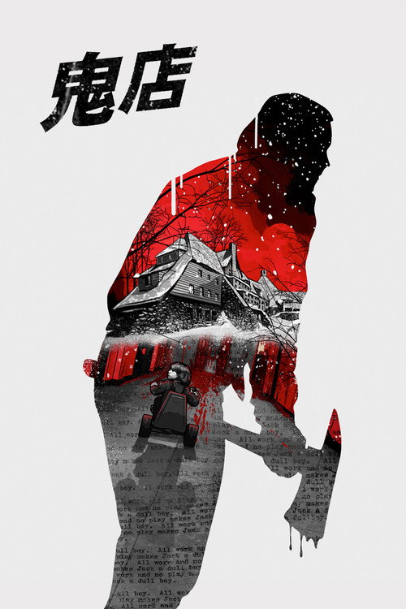
闪灵 The Shining
冬天，一家三口住进山里那家没人住的酒店。整个冬天，只有他们三个。
剧情梗概
作家杰克·托伦斯接下远望酒店的冬季看守工作，带着妻子温蒂和儿子丹尼住了进去。山路封了，整个冬天只有他们一家。丹尼有种说不清的能力，能看到别人看不到的东西，还有一个住在他嘴里的「托尼」。酒店的前任看守曾在这里杀掉全家，这件事大家都知道，但没人当回事。随着写作毫无进展、杰克越来越暴躁，丹尼开始看见走廊尽头的双胞胎、237 号房、以及那部一直在运行的电梯。
亮点
- 斯坦利·库布里克自编自导自制，改编自斯蒂芬·金的同名小说；金本人对这版改编长期不满，他自己后来监制了 1997 年的电视版——这是影史上最著名的「作者与原作者分歧」之一。
- 杰克·尼科尔森饰杰克；片中大量台词是他即兴发挥的，包括那句「Here's Johnny!」。
- 摄影由约翰·奥尔科特完成，大量使用斯坦尼康低机位长镜头跟随角色穿过走廊，这是这种摄影方式第一次被大规模用于叙事长片。
- 谢莉·杜瓦尔的表演在当年饱受争议，甚至入围过金酸莓最差女主角提名；近年已被大量影评人重新评价，认为那是一种被误读的、极度消耗的表演。
- 影片 1980 年公映时口碑两极，如今被公认为影史最重要的恐怖片之一；2022 年《视与听》杂志影史百大佳片第 88 位。
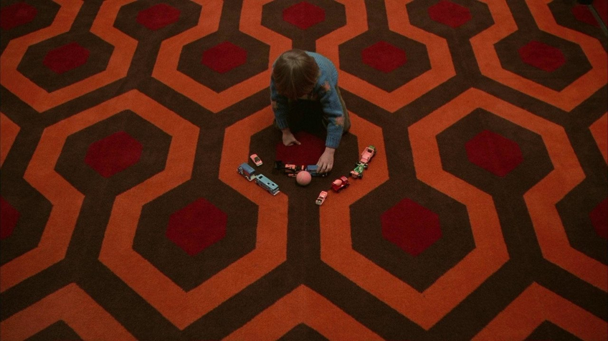
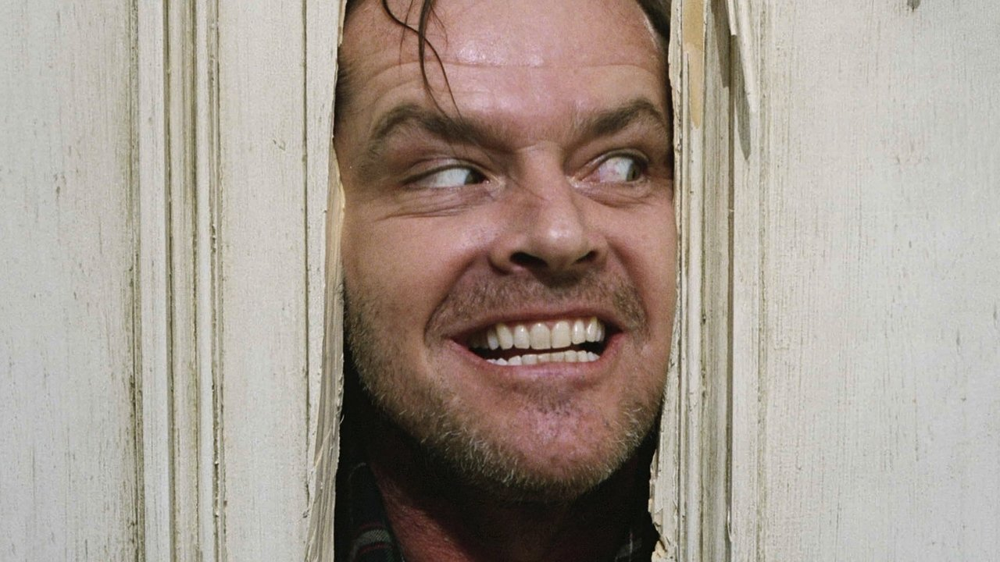
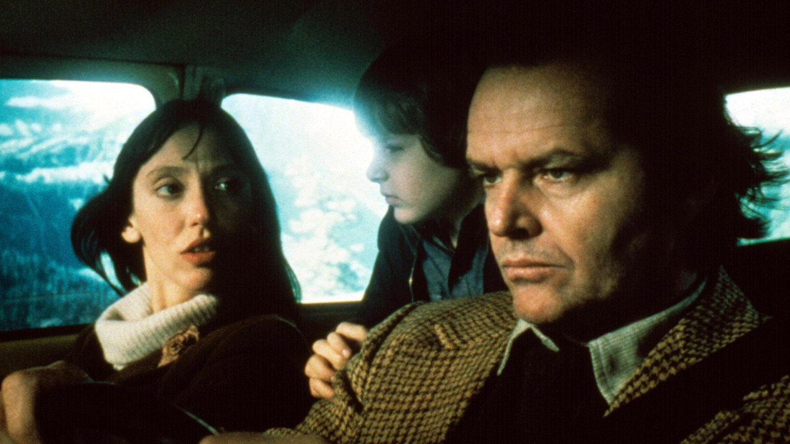
导演与主创 · 他们的历史作品
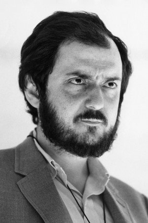
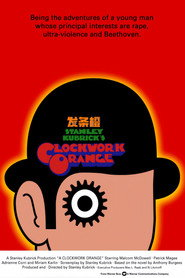
发条橙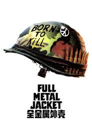
全金属外壳 大开眼戒
大开眼戒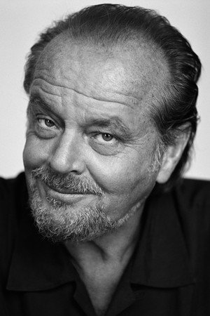
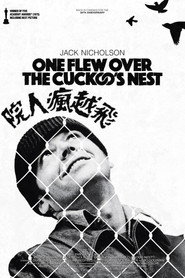
飞越疯人院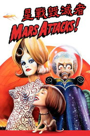
火星人玩转地球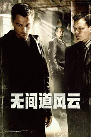
无间道风云 唐人街
唐人街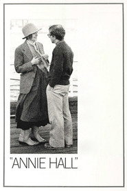
安妮·霍尔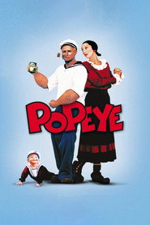
大力水手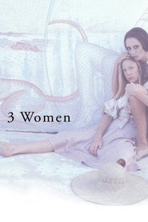
三女性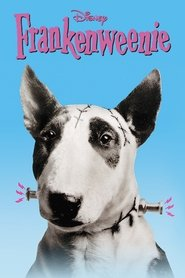
科学怪狗短评（轻微剧透）
《闪灵》厉害的地方在于它几乎没有一个「吓人的东西」。库布里克把鬼魂、双胞胎、237 号房全都拍得清清楚楚，可是真正的压迫感来自别处：来自那一大片空无一人的走廊、来自永远对称的构图、来自一家三口被放进一个比他们大一百倍的空间里。它不是在讲鬼，是在讲「孤立如何把一个本来就有裂缝的家彻底掰开」。影片最狠的一笔是它给杰克的镜头——库布里克给了这个施暴者远超温蒂和丹尼的共情，你会先觉得他可怜，然后才发现自己被利用了。技术上无可挑剔：斯坦尼康跟随、对称构图、那种「越空越吵」的音效设计，还有巴托克与彭德雷茨基的现代音乐。缺点要讲明白：146 分钟节奏极慢，很多人第一遍会不耐烦；它对原著的改动很大，斯蒂芬·金的读者几乎必然失望；Metacritic 仅 66 说明影评人当年并不买账，豆瓣 8.3 与烂番茄 84% 的差距也来自这种分裂。轻微剧透：最后那张 1921 年的合影不是彩蛋，是它唯一给出的解释——而这个解释比任何解释都更让人发冷。
为什么值得一看
喜欢《遗传厄运》《仲夏夜惊魂》那种把「空间与家庭」本身当成恐怖源的观众；能接受慢节奏、开放式解读与心理压迫的人。想看 jump scare 爽片的人会失望——它几乎不用那种手法。含暴力与血腥（R 级）。内地曾于 2026 年 1 月上映过一次，平时以流媒体为主。
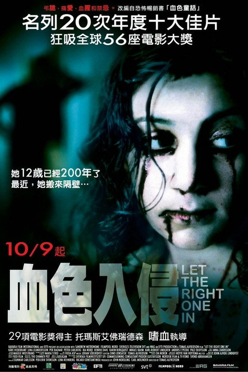
生人勿进 Let the Right One In
隔壁搬来一个女孩。她不太出门，也不太怕冷。
剧情梗概
斯德哥尔摩郊区，冬天。十二岁的奥斯卡在学校被一伙人欺负，从不反抗，回家后一个人在院子里对着树练刀。隔壁搬来一个同龄女孩艾丽，还有一个年纪较大的男人跟着。艾丽只在夜里出来，光脚踩在雪地上也不觉得冷。镇上开始出现命案与失踪，而奥斯卡越来越喜欢她。当事情终于走到不可收拾的一步时，奥斯卡必须决定自己要站在哪一边。
亮点
- 托马斯·阿尔弗雷德森执导，改编自约翰·艾维德·林德奎斯特的同名小说，作者本人参与编剧——小说里的背景就是导演自己长大的斯德哥尔摩郊区。
- 凯尔·赫德布朗特饰奥斯卡、莉娜·林德尔森饰艾丽，两位小演员都是从数千人海选中选出的，表演几乎没有戏剧腔。
- 影片几乎全在瑞典冬季实景拍摄，靠自然光与雪地反射营造那种「蓝到发白」的基调，没有使用明显的滤镜。
- 烂番茄 98%，是近二十年口碑最高的北欧恐怖片之一；2010 年的美版翻拍《美版生人勿进》同样获得好评。
- 音效设计极其克制——吸血场面大多靠画外音、反射与剪接完成，而不是直接展示，这让暴力反而更难受。
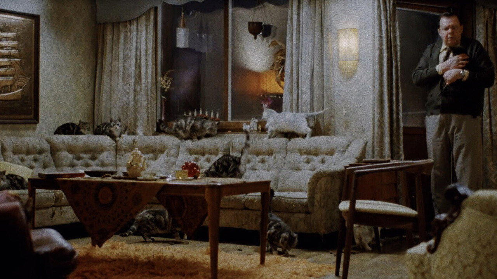
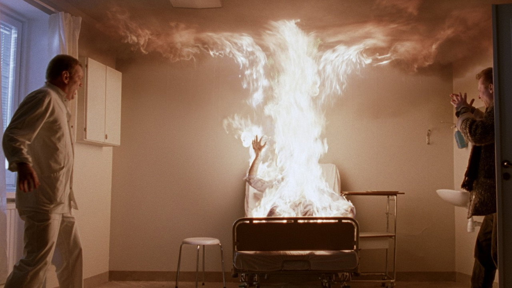
导演与主创 · 他们的历史作品
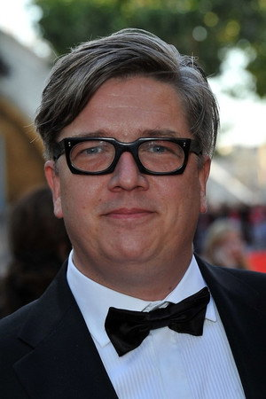
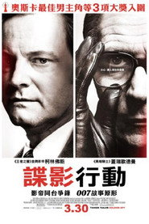
锅匠，裁缝，士兵，间谍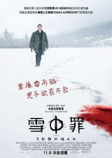
雪人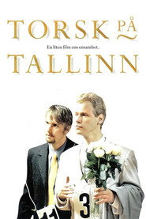
Screwed in Tallinn: A Small Film About Loneliness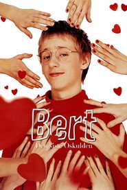
Bert: The Last Virgin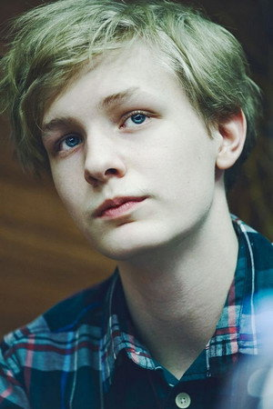
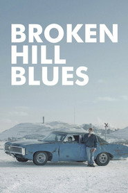
Broken Hill Blues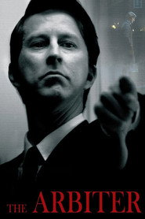
The Arbiter短评（轻微剧透）
《生人勿进》是一部把「吸血鬼」还原成「怪物」的电影。这些年的吸血鬼作品大多把它们拍成浪漫的、贵族的、恋爱脑的，阿尔弗雷德森偏不：他的艾丽会撕咬、会求生、会杀人，也会在得手之后露出一点疲惫。她不是来谈恋爱的，她只是需要一个人帮她活下去——而奥斯卡恰好是个被欺负到谁都不在乎的孩子。这才是本片真正的主题：两个缺东西的孤独小孩靠在一起，其中一个是人，另一个不是，但影片从头到尾没有评判这件事。技术上它非常克制，全片几乎没有配乐高潮，暴力场面一律冷处理，雪地的蓝光铺满每一场夜戏。缺点也说：豆瓣仅 7.8 说明它在国内并不讨喜——节奏慢、几乎没有刺激的段落、大量时间花在两个孩子聊天上，期待恐怖片的人会坐不住；中段叙事略散。轻微剧透：最后那个装行李箱的镜头是全片最恐怖也最温柔的一笔——你明知道该害怕，却还是希望他们能走成。
为什么值得一看
喜欢《它在身后》《机械姬》那种把类型片元素拿来讲孤独与关系的观众；能接受北欧片的冷色调与慢节奏、能接受儿童演员承担大量戏份的人。含血腥与暴力（15 禁），但程度不高；不适合想看快节奏恐怖片的人。内地未引进。
沉默的羔羊 The Silence of the Lambs
要抓住一个怪物，你得先去见另一个怪物。
剧情梗概
FBI 实习探员克拉丽丝·史达琳被派去巴尔的摩州立精神病院，拜访被单独关押的精神科医生汉尼拔·莱克特——他智识极高，也是个食人者。局里正在追捕绰号「野牛比尔」的连环杀手，受害者都被剥去皮肤。克拉丽丝的任务是从汉尼拔嘴里套出线索，代价是交出自己的童年。参议员的女儿被绑架后，时间开始倒数；而汉尼拔给线索的方式，是把答案拆成谜语。
亮点
- 乔纳森·戴米执导；本片是奥斯卡史上第三部拿下最佳影片、最佳导演、最佳男主、最佳女主、最佳改编剧本五项的电影（另两部是《一夜风流》与《飞越疯人院》）。
- 安东尼·霍普金斯全片只出场约 16 分钟，是奥斯卡最佳男主角史上最短的获奖表演之一；他几乎不眨眼，这个设计是他自己定的。
- 朱迪·福斯特饰克拉丽丝，拿下第二座奥斯卡影后；她的西弗吉尼亚口音与紧绷的肢体是刻意设计，用来表现「在一个全是男人的系统里不能犯一次错」。
- 片中出现的烟草天蛾被专门空运到片场，住在可调温湿度的房间里，戏服也单独制作。
- 1991 年北美票房 1.31 亿美元、全球 2.73 亿美元，是当年全球票房第五；原版海报在 2006 年被评为「35 年来最好的电影海报」。
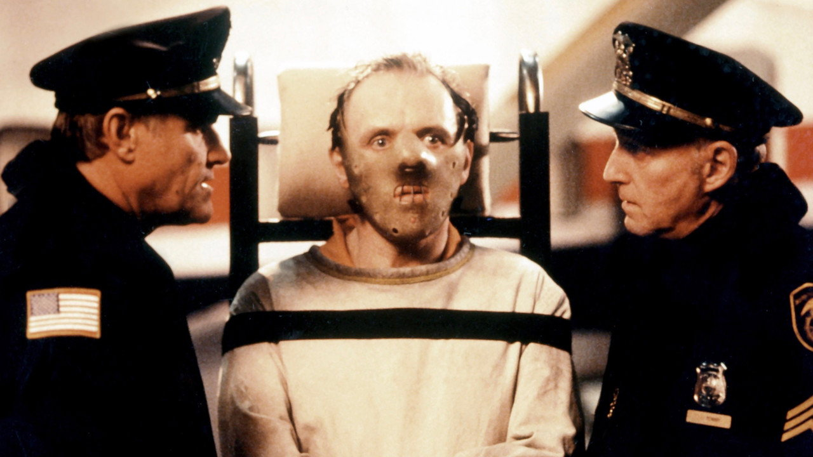
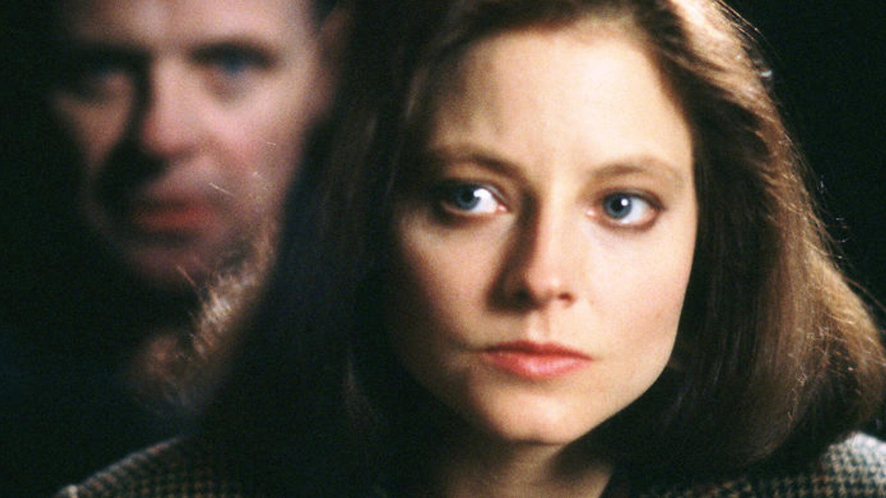
导演与主创 · 他们的历史作品
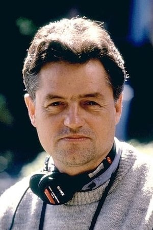
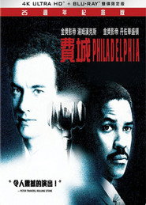
费城故事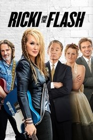
瑞奇和闪电
 出租车司机
出租车司机 战栗空间
战栗空间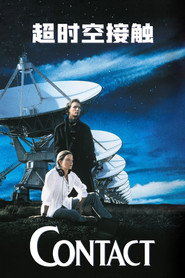
超时空接触极乐空间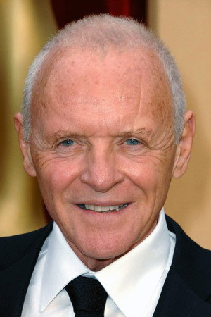
 雷神
雷神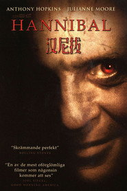
汉尼拔 破绽
破绽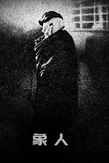
象人短评（轻微剧透）
《沉默的羔羊》在技术上最了不起的一点是：它把「审讯」拍成了亲密戏。汉尼拔和克拉丽丝的每一场对话都是近距离、正面、几乎不动的特写，镜头在两人之间来回切，你会觉得这两个人比任何情侣都更了解对方。戴米故意不给汉尼拔笼子外的镜头，他始终被框在玻璃后面，却比任何自由的人都更有压迫感——这就是本片的核心：权力不来自身体，来自「我知道你不想说的事」。霍普金斯出场只有 16 分钟，但他把每一次停顿都用上了；他不表演威胁，他表演的是「礼貌」。福斯特的部分同样关键，她必须让观众相信这个角色的恐惧与野心是同时存在的。缺点必须说：影片对「野牛比尔」这个角色的处理在上映后引发了关于跨性别与同性恋刻画的长期争议，戴米本人回应过但争议至今存在；另外它的恐怖场面相当血腥（R 级）。轻微剧透：影片最后一通电话之后，汉尼拔走进人群——这不是续集的伏笔，这是它在说「你永远无法把这类人关住」。
为什么值得一看
喜欢《七宗罪》《十二宫》《心灵猎人》那种犯罪心理题材的观众；想看一次「教科书级别的双人对峙」的人。能接受血腥与高度紧张的心理压迫（R 级，含剥皮、尸体等画面，敏感者慎入）。内地未引进，各流媒体可看。
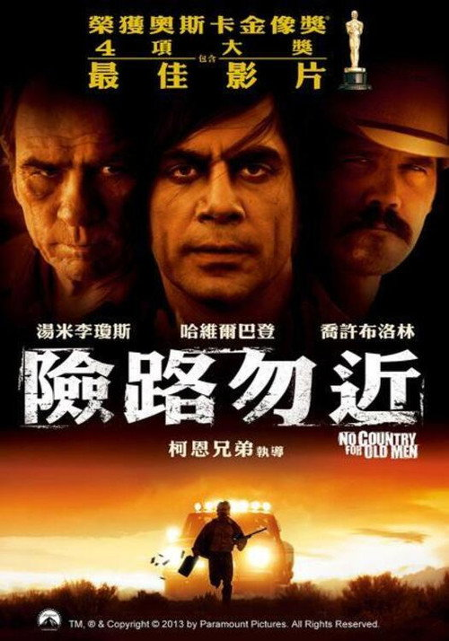
老无所依 No Country for Old Men
两百万美元就摆在沙漠里。捡起来的人，从此没有回头的路。
剧情梗概
1980 年，德州西部。焊工卢埃林·摩斯在荒原上打猎，撞见一地尸体、几车毒品，和一个装着两百万美元的箱子。他把钱带回家，夜里又带着一壶水回去——从此被什么东西盯上了。追杀他的是安东·奇古尔，一个用硬币决定别人生死、说话客气、从不解释的人。老警长贝尔跟在后面收拾残局，他是那种记得「以前不是这样」的人。三方在同一个州里朝不同方向走，最后没有人等到自己想要的那个结果。
亮点
- 科恩兄弟自编自导自制，改编自科马克·麦卡锡的同名小说，几乎是逐场还原，很多对白直接来自原著。
- 哈维尔·巴登饰奇古尔，拿下奥斯卡最佳男配角；那个锅盖头是他和导演一起定的，麦卡锡原本对这个造型将信将疑。
- 影片几乎没有配乐，全靠环境音与静默——这是科恩兄弟与音效设计师斯基普·列夫赛刻意做的决定，紧张感几乎全由声音空缺制造。
- 拿下第 80 届奥斯卡最佳影片、最佳导演、最佳改编剧本、最佳男配角四项。
- 全球票房约 1.71 亿美元，是科恩兄弟到当时为止票房最高的作品；Metacritic 92 分，是 2000 年代评分最高的影片之一。
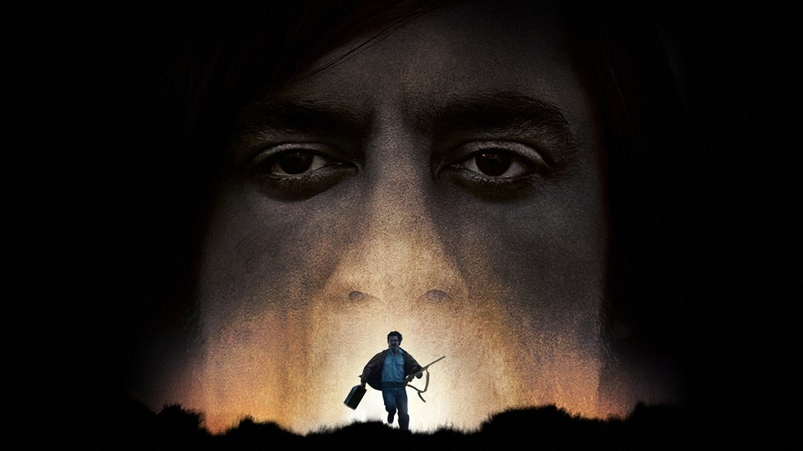
导演与主创 · 他们的历史作品
 谋杀绿脚趾
谋杀绿脚趾 冰血暴
冰血暴 大地惊雷
大地惊雷 阅后即焚
阅后即焚 死侍2
死侍2 复仇者联盟3：无限战争
复仇者联盟3：无限战争 复仇者联盟4：终局之战
复仇者联盟4：终局之战 007：大破天幕杀机
007：大破天幕杀机 母亲！
母亲！ 沙丘2
沙丘2短评（轻微剧透）
《老无所依》是一部把「反派不可战胜」这件事拍到极致的电影，而且它不解释。奇古尔没有背景、没有动机、没有童年创伤，他就像一股自然力，你只能躲，不能谈判——科恩兄弟连追车戏都不给他配乐，因为配乐会让他变成「角色」，而他们要的是「命运」。影片真正的主角其实是老警长贝尔：他是个好人，但他很清楚自己面对的东西已经超出了他能理解的范围。汤米·李·琼斯那段讲父亲和老警长的独白，是全片的题眼——不是世界变坏了，是他终于老了，接不住了。技术上它冷静得可怕：几乎没有配乐、大量空镜与远景、暴力场面一律不渲染。缺点也说清楚：它的结尾是刻意的「不给交代」，很多人看完会觉得被耍；摩斯这个角色在后半段的决策也略显草率；豆瓣 8.4 相对烂番茄 93%、Metacritic 92 偏低，说明中国观众对这种「反高潮」的接受度要低一档。轻微剧透：影片最后贝尔讲的两个梦，是他唯一一次说出自己在怕什么——而他说完之后，电影就结束了。
为什么值得一看
喜欢《血色将至》《赴死之路》《风河谷》那种荒凉、宿命、不给希望的现代西部气质的观众；喜欢科恩兄弟《冰血暴》《老妇杀手》那种冷幽默加突如其来的暴力的人。含大量枪击与冷血杀戮（R 级），但不是血浆片，恐怖感来自「这个人不会停」。不适合想看正邪对决的人。内地未引进。
穆赫兰道 Mulholland Drive
天亮之后，故事从头再来一遍。但这一次，所有人都不对了。
剧情梗概
深夜的穆赫兰道发生车祸，一个黑发女人从车里爬出来，失了忆，躲进一间公寓。刚从加拿大来的新人演员贝蒂在这里发现了她，两人开始一起追查她的身份。另一边，导演亚当·凯舍尔被投资人逼着换掉女主角，一个牛仔在电话里对他下指令，一个笨拙的杀手在廉价旅馆里搞砸了活。前半段像一部好莱坞追梦片，后半段塌成另一副样子，而两个段落共用同一批演员、同一张脸。
亮点
- 大卫·林奇自编自导；本片最初是 ABC 的剧集试播集，被电视台弃用后，林奇自筹资金补拍结尾改成长片。
- 娜奥米·沃茨饰贝蒂／黛安，这是她第一次担纲主演；林奇后来说，他只看了一次试镜带就定了她。
- 劳拉·哈林饰黑发女人「丽塔」，身份始终不明，是整部片的核心谜面。
- 2001 年戛纳电影节最佳导演奖由大卫·林奇与《缺席的人》的科恩兄弟共同获得。
- 2016 年 BBC 组织全球 177 位影评人评选「21 世纪百大电影」，本片位列第一。
导演与主创 · 他们的历史作品
 妖夜慌踪
妖夜慌踪 午夜凶铃2(美版)
午夜凶铃2(美版) 惩罚者
惩罚者短评（轻微剧透）
《穆赫兰道》不是一部「看不懂」的电影，是一部「看完了不敢确定自己看懂了」的电影——这两者差别很大。林奇给的信息其实是够的：前 115 分钟是一个人在昏迷或幻想里给自己编的美梦，后 30 分钟是梦醒之后的现实，两条线的人物一一对应，线索铺得非常工整。它之所以让人不安，是因为林奇拒绝给你一个「官方解」，他只给你情绪：梦里的贝蒂光彩夺目、无所不能，醒来的黛安窝在沙发里、被羞辱、被抛弃。这两张脸是同一个人，而这就是全片最残忍的地方。技术上它是林奇的巅峰：蓝色滤镜、突然拉近的耳语、那段在寂静俱乐部里的演唱（演员对口型，歌声来自现场），都让人浑身发冷。缺点必须说：它确实门槛高，147 分钟、无解释、大量看似无关的支线，第一次看会很挫败；喜欢明确剧情的人会非常恼火。轻微剧透：那个蓝色盒子是全片的分界线——它打开之前你看到的都是她想让自己相信的版本，打开之后才是她。
为什么值得一看
喜欢《记忆碎片》《禁闭岛》《彗星来的那一夜》那种结构与心理双重迷宫的观众；想体验一次「看完立刻想二刷」的叙事的人。能接受 R 级的性与暴力场面、大量无解留白，以及「不给标准答案」这件事。不适合想放松、想看清楚故事的人。内地未引进。
致命魔术 The Prestige
每个魔术都有三步。第三步叫「神迹」，而神迹总是有代价的。
剧情梗概
十九世纪末的伦敦。魔术师罗伯特·安吉尔与阿尔弗雷德·伯登原本是搭档，一场水下逃脱事故让安吉尔的妻子死亡，两人从此成了死敌。伯登掌握了一套没人能破解的「瞬间转移」；安吉尔为了超越他，找上发明家特斯拉，造出了一台机器。两个人的较量从拆台、抄袭、卧底一路走到无法回头的地方，而他们各自都藏着一个不能对任何人说的秘密——那个秘密就是整部片的答案。
亮点
- 克里斯托弗·诺兰自编自导，与弟弟乔纳森·诺兰合写剧本，改编自克里斯托弗·普瑞斯特的同名小说。
- 克里斯蒂安·贝尔饰伯登、休·杰克曼饰安吉尔；两人为了角色分别减重与增肌，贝尔一度瘦到被剧组医生警告。
- 斯嘉丽·约翰逊饰助手奥利维亚；迈克尔·凯恩饰机关师卡特，是影片事实上的叙述者与良心。
- 摄影由沃利·菲斯特完成，全片几乎不做数字调色，靠布光与胶片本身营造维多利亚时期的暗调质感。
- 获第 79 届奥斯卡最佳摄影、最佳艺术指导两项提名；豆瓣 8.9、超过 120 万人评分，长期位居 TOP250 前 40。
导演与主创 · 他们的历史作品

 星际穿越
星际穿越 盗梦空间
盗梦空间 蝙蝠侠：黑暗骑士
蝙蝠侠：黑暗骑士 蝙蝠侠：黑暗骑士崛起
蝙蝠侠：黑暗骑士崛起 蝙蝠侠：黑暗骑士蝙蝠侠：黑暗骑士崛起
蝙蝠侠：黑暗骑士蝙蝠侠：黑暗骑士崛起 蝙蝠侠：侠影之谜
蝙蝠侠：侠影之谜 美国精神病人
美国精神病人
 金刚狼3：殊死一战
金刚狼3：殊死一战 X战警：逆转未来
X战警：逆转未来 囚徒
囚徒 X战警
X战警短评（轻微剧透）
《致命魔术》是诺兰最被低估的一部，也是他最「冷」的一部。它表面上讲两个魔术师斗气，实际上讲的是「为了赢，你愿意复制多少个自己」——而这句话在片中同时是字面意思。诺兰做的最聪明的一件事是结构：全片由三本日记套叠而成，你读到的每一段叙述都可能是对方设计的陷阱，于是观众和两位主角一样，永远不知道自己拿到的是哪一层的真相。它同时也是一部关于「观看」的电影：片中那句「你想要被欺骗」不只是说观众，也是说安吉尔自己——他明明知道答案，还是选择继续。贝尔和杰克曼的表演方向完全不同，一个向内压、一个向外炸，正好对应两种执念。缺点也说清楚：烂番茄仅 76%（观众 92%）说明影评人认为它在情感上偏冷、人物偏工具化；最后十分钟的信息交代有点赶，几处逻辑需要二刷才顺。轻微剧透：影片真正的答案在开场第一分钟就给了你——诺兰从不藏，他只是赌你不会注意。
为什么值得一看
喜欢《记忆碎片》《盗梦空间》那种叙事套层与「最后十分钟推翻一切」的观众；对「天才的执念能走多远」这个母题有兴趣的人。PG-13，几乎没有血腥，适合口味偏轻但想看烧脑片的观众。不适合期待温情结局的人——它没有赢家。内地未引进，流媒体可看。
小姐 The Handmaiden
她是被派去骗她的。后来她们一起走。
剧情梗概
1930 年代，日据时期的朝鲜。扒手出身的淑姬被「伯爵」安插进日本贵族秀子的宅邸做侍女，任务是让秀子爱上伯爵、把她送进疯人院、然后分掉遗产。计划推进得很顺利，直到淑姬发现自己对秀子的感情不是演的。影片分成三段，每一段都推翻上一段的视角；而最后站在船上的那两个人，一开始都只是别人手里的棋子。
亮点
- 朴赞郁执导，改编自英国作家萨拉·沃特斯的小说《指匠情挑》，把背景从维多利亚时代的英国搬到日据时期的朝鲜与日本。
- 金泰梨从约 1500 人的试镜中胜出，此前几乎没有长片经验，本片是她的银幕处女作。
- 金敏喜饰秀子，凭此片拿下韩国多个影后；她需要穿戴 25 套不同服饰，服装指导赵尚景连手套与袜子都逐件斟酌。
- 入围第 69 届戛纳主竞赛，获技术 Vulcan 奖；拿下第 71 届英国电影学院奖最佳外语片。
- 韩国观影人次超 400 万，创下当时韩国 19 禁影片最快破 200 万的纪录；全球票房约 3786 万美元。
导演与主创 · 他们的历史作品

 老男孩
老男孩 斯托克
斯托克 亲切的金子
亲切的金子 我要复仇
我要复仇短评（轻微剧透）
《小姐》是一部关于「被书写的人如何夺回笔」的电影。朴赞郁把原著的三段式结构用到了极致：第一段是淑姬的视角，你以为你在看一部骗中骗；第二段换到秀子，同样的时间线突然变成另一部电影；第三段才是两个人的。这个设计的高明之处在于它不是炫技——每一次视角切换的动机都是「上一版里，有一个人没有说话」。影片的愤怒指向非常清楚：姨父用藏书和朗读把秀子困成一个「念书的容器」，伯爵用婚姻把她标价，两个男人都假定她不会反抗。所以最后两个女人做的事不是复仇爽剧，是逃跑。美术与服装是近年最考究的一档，和风与英式混合的宅邸本身就是叙事的一部分。缺点必须说：三段结构导致中段有大量重复镜头，耐心不足会觉得拖；情欲场面直白且篇幅不小（19 禁），不适应的人会尴尬。轻微剧透：影片最狠的一笔是它让两个女人在同一张床上一起骗了那个教她们骗人的男人——骗局最后掉转了方向。
为什么值得一看
喜欢《分手的决心》《燃烧》那种精致、克制又暗流汹涌的韩国作者电影的观众；对「女性视角的骗局与逃脱」有兴趣的人。含直白情欲与暴力（19 禁 / R 级），成年观众。不适合想看轻松爱情片的人，也不适合对长片耐心不足的人——建议看 168 分钟加长版，结构更完整。内地未引进。
燃烧 Burning
他说他每隔一阵就要烧掉一个塑料棚。当时没人当回事。
剧情梗概
钟秀是个靠零工过活的年轻人，住在坡州边境的农村，家里有一头牛和一堆麻烦：父亲在打官司，母亲多年没联系。他在首尔偶遇同乡惠美，惠美要去非洲旅行，托他帮忙喂猫——一只从不露面的猫。惠美从非洲带回了本，一个开保时捷、什么都不缺、也不工作的人。三个人偶尔聚在一起抽大麻、聊天。有一次本告诉钟秀，他有个爱好：每隔一阵就烧掉一个没人要的塑料棚，因为「它们本来就该消失」。之后，惠美消失了。
亮点
- 李沧东执导，与编剧吴政美共同改编自村上春树的短篇《烧仓房》；这是李沧东继《诗》(2010) 之后时隔八年的长片。
- 刘亚仁饰钟秀；史蒂文·元（《行尸走肉》）饰本，这是他第一次主演韩国电影；全钟瑞饰惠美，是银幕新人。
- 入围第 71 届戛纳主竞赛，获国际影评人费比西奖，并以 3.8/4 创下当时戛纳场刊的历史最高分。
- Metacritic 90 分，是 2018 年全球评分最高的影片之一；但韩国本土观影仅约 37 万人次，是典型的「口碑与票房背离」。
- 影片对「愤怒」的处理极其克制——钟秀是那种从不爆发的人，这也正是它最后那一刀可怕的原因。
导演与主创 · 他们的历史作品
 老手
老手 思悼
思悼短评（轻微剧透）
《燃烧》是一部几乎没有证据的电影。李沧东把村上春树那个短篇里「烧塑料棚」的比喻，直接翻译成了阶级：本不缺钱、不工作、也不恨谁，他只是觉得某些东西「没用、该烧掉」，其中包括人。影片的恐怖在于它从不确认——本到底做了什么，全片没有一次直接的证据，所有线索都是钟秀的执念。而这正是李沧东要的效果：他拍的不是一桩案子，是「一个被无视的人，意识到自己也被归类为没用的东西」。刘亚仁的表演极好，他把那种「说不出话的愤怒」压到最后一刻；史蒂文·元的本则是近年最让人不舒服的反派之一，因为他全程礼貌、迷人、没有恶意。技术上它有李沧东一贯的耐性：长镜、自然光、坡州边境的黄昏与广播声。缺点必须说：148 分钟、几乎没有情节推进，中段会非常考验耐心；它不给答案，喜欢明确结论的人会恼火。豆瓣 7.9 与 Metacritic 90 的落差，正是这种「影评人盛赞、观众觉得闷」的典型。轻微剧透：影片最后那场戏不是破案，是钟秀终于把自己写进了那个故事——代价是他也变成了会烧东西的人。
为什么值得一看
喜欢《寄生虫》《寄生虫》之外那种「韩国社会的阶级剖面」的观众；喜欢《诗》《密阳》那种沉静、缓慢、后劲极大的作者电影的人。能接受 148 分钟、无明确结局、大量留白（15 禁，含毒品与暴力）。不适合想看悬疑破案片的人——它不破案，只逼你想。内地未引进。